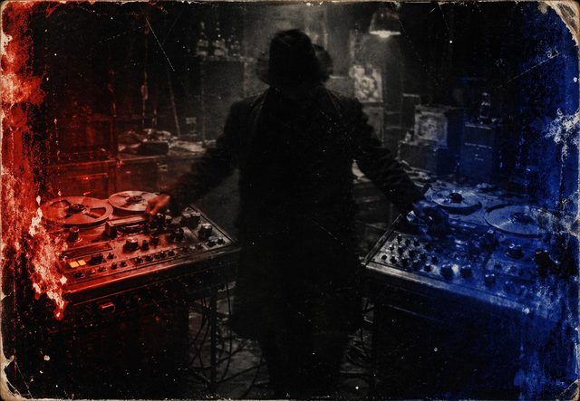
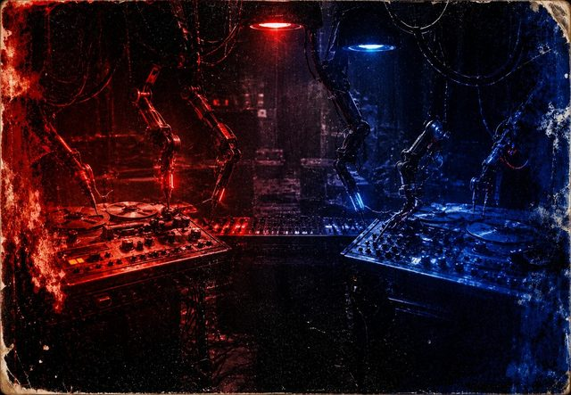

Narrative Ontology & General Universal Mechanics
NOGUM
NOGUM no es otro manual universal de rol. Es una tesis sobre cómo jugar, que cambia las reglas del juego. Literal y figuradamente.
Cada regla de un manual produce muchas cosas en la mesa. Puede ser precisa y fiel a la realidad que simula, para que cada golpe y cada caída resulten creíbles. Puede ser vaga y abierta, para que la narración se lleve el foco. O puede abrir una combinatoria casi infinita de poderes, para que la diversión esté en encontrar tu combo.
Hay un aspecto del que se habla mucho menos: cómo se sienten los jugadores con los dados en la mano. ¿Contienen la respiración? ¿Se ríen antes de ver el resultado? ¿Les da igual? Y sobre todo: ¿encaja esa emoción con el universo que están jugando? Un sistema en el que casi todo sale bien le quita el miedo a una historia de terror. Uno en el que cualquier cosa puede torcerse convierte una aventura heroica en un calvario.
Tirando de ese hilo nació todo lo demás: un mismo manual que, con pequeños cambios, sirva para un universo de terror en el que los jugadores temen cada tirada, y para uno cómico en el que tirar los dados es abrir una caja de sorpresas. Pocos ajustes, y el manual queda hecho a la medida de la emoción de tu universo.
Y entonces llegó el feliz accidente. Esos ajustes resultaron tan sencillos que no había ninguna razón para hacerlos una sola vez. Se pueden cambiar entre campañas, entre sesiones, incluso entre escenas: un respiro cómico en mitad de una campaña oscura, una noche de terror en mitad de una aventura luminosa. Literalmente, cambias las reglas del juego cuando la mesa quiera sentir otra cosa. NOGUM te devuelve el mando de lo que siempre vino impuesto y sin declarar.
Una apuesta, cuatro piezas
Euforia, miedo, imprevisibilidad… cada emoción, una herramienta.
Cada pregunta, cada respuesta, cada palanca: el manual completo.
Una versión acelerada que destila lo esencial, lista para jugar esa misma tarde.
Y una app que te lleva de la mano por todo el proceso.

Empieza aquí · 20 min La Idea Qué pregunta responde NOGUM, con qué reglas, y a qué ha renunciado. Ni una sola regla dentro. Leer → Jugar esta tarde
Acelerado
El juego entero en quince páginas y cuatro modos. Sin leer nada más.
Jugar →
Jugar esta tarde
Acelerado
El juego entero en quince páginas y cuatro modos. Sin leer nada más.
Jugar →
 El manual
Juego completo
Motor, personajes, peligro, el Bazar, veinte recetas de mundo y los apéndices con todas las cifras.
Abrir →
El manual
Juego completo
Motor, personajes, peligro, el Bazar, veinte recetas de mundo y los apéndices con todas las cifras.
Abrir →

La herramienta App Monta la mesa con preguntas sobre escenas, acota el catálogo a tu mundo y hace las fichas. Probar →Libre
Todo esto se publica bajo CC BY-SA 4.0: puedes copiarlo, traducirlo y construir encima, también con ánimo de lucro, citando al autor y manteniendo la licencia.
Y las reglas son libres. Las mecánicas de juego no son objeto de derechos de autor: puedes escribir suplementos, ambientaciones o herramientas compatibles sin pedirle permiso a nadie. Si quieres construir sobre NOGUM, ya puedes.